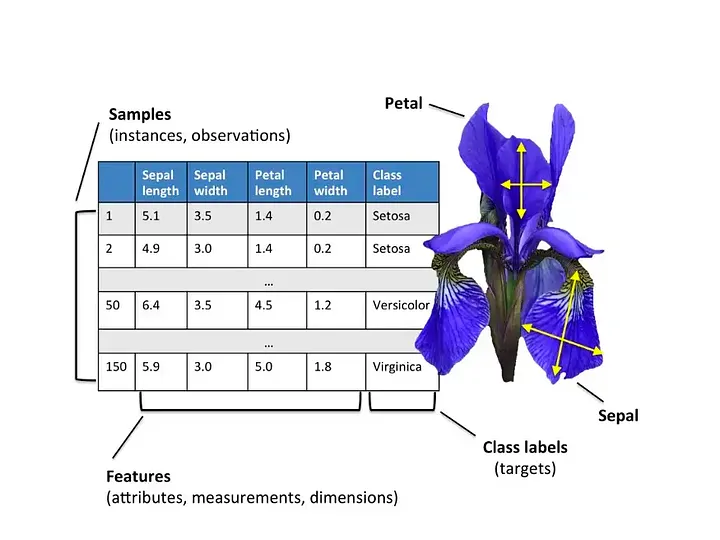

Pandas#
References#
Installation {.hide .smaller-90}#
You can install Pandas using pip:
pip install pandas
Or using conda:
conda install pandas
To use Pandas, you need to import the pandas module:
What is Pandas?#
Pandas is a Python library that provides data structures and data analysis tools. Pandas is derived from ‘panel’ and ‘data’, panel data is an econometrics term for data sets that include observations over multiple time periods for the same individuals. The origins of Pandas is in the financial industry, where it was developed to provide an efficient way to work with large datasets.
Tabular Data {.hide}#
Pandas is designed to work with tabular data. Tabular data is data that is organized in rows and columns. Each row represents a single observation, and each column represents a single variable.

How is Pandas different from Numpy? {.hide .smaller-80}#
NumPy provides the basic array data type and core array operations. Pandas builds on this foundation by defining fundamental structures for working with data. It offers methods for tasks such as:
reading data
handling dates and time series
sorting, grouping, re-ordering
general data manipulation, such as dealing with missing values.
Unlike Numpy, Pandas data structures are designed to work with heterogenous data. This means that each column in a Pandas DataFrame can have a different data type.
Basic data structures in pandas {.hide .smaller-90}#
Pandas provides three primary data structures:
Series: A one-dimensional labeled array capable of holding any data type. It’s best thought of as a single column of data.
DataFrame: A two-dimensional labeled data structure with columns of potentially different types. It’s similar to a table in a database or an Excel spreadsheet.
Index: An immutable sequence used for indexing and alignment of the data structures, like the row labels in a DataFrame.
Data Structures Visualization {.hide}#
Consider the following sample DataFrame - it contains both rows and columns. A series is a singular column of this DataFrame. Both the DataFrame and each Series contain an Index - a shared list of row labels.

Series {.hide .smaller-70}#
A Series represents a column of a DataFrame. It is a one-dimensional array-like object containing values, with associated data labels called its index. If you don’t specify an index, a default sequence of integers is assigned as the index.
#| echo: false
import pandas as pd
import numpy as np
s = pd.Series([0.25, 0.5, 0.75, 1.0])
print(s)
0 0.25
1 0.50
2 0.75
3 1.00
dtype: float64
You can create a series with your own index:
s = pd.Series([0.25, 0.5, 0.75, 1.0],
index=['a', 'b', 'c', 'd'])
print(s)
a 0.25
b 0.50
c 0.75
d 1.00
dtype: float64
Numpy-like Operations {.hide .smaller-70}#
Pandas Series are built on top of NumPy arrays and support many similar operations.
s = pd.Series(np.random.randn(4), name='daily returns')
s
0 1.704305
1 0.746829
2 1.245751
3 0.341557
Name: daily returns, dtype: float64
s * 100
0 170.430506
1 74.682871
2 124.575051
3 34.155697
Name: daily returns, dtype: float64
np.abs(s)
0 1.704305
1 0.746829
2 1.245751
3 0.341557
Name: daily returns, dtype: float64
More than NumPy Arrays {.hide .smaller-60}#
A pandas Series is a hybrid between a NumPy array and a dictionary: it combines NumPy’s efficient numerical operations with dictionary-style labeled indexing, while adding specialized statistical methods and more flexible indexing options designed specifically for data analysis.
s.describe()
count 4.000000
mean 1.009610
std 0.592653
min 0.341557
25% 0.645511
50% 0.996290
75% 1.360389
max 1.704305
Name: daily returns, dtype: float64
s.index = ['AMZN', 'AAPL', 'MSFT', 'GOOG']
s
AMZN 1.704305
AAPL 0.746829
MSFT 1.245751
GOOG 0.341557
Name: daily returns, dtype: float64
s['AMZN']
np.float64(1.7043050584708295)
'AAPL' in s
True
Filtering {.hide .smaller-80}#
You can filter a Series using boolean indexing. Boolean indexing (also called boolean masking or boolean filtering) returns values from the Series where the condition is True, while filtering out False values.
s > 0 # Filter condition to select all elements greater than 0
AMZN True
AAPL True
MSFT True
GOOG True
Name: daily returns, dtype: bool
Use the Boolean index with square brackets [] to filter the Series:
s[s > 0] # Select all elements greater than 0
AMZN 1.704305
AAPL 0.746829
MSFT 1.245751
GOOG 0.341557
Name: daily returns, dtype: float64
DataFrames {.hide .smaller-70}#
A DataFrame is several columns, one for each variable, it is analogous to a (highly optimized) Excel spreadsheet. You can create a DataFrame by passing a dictionary of lists to the DataFrame constructor.
data = {
'name': ['John', 'Anna', 'Peter', 'Linda'],
'age': [24, 13, 53, 33],
'city': ['New York', 'Paris', 'Berlin', 'London']
}
df = pd.DataFrame(data)
df
| name | age | city | |
|---|---|---|---|
| 0 | John | 24 | New York |
| 1 | Anna | 13 | Paris |
| 2 | Peter | 53 | Berlin |
| 3 | Linda | 33 | London |
Creating DataFrames {.hide .smaller-60}#
There are several common ways to create a DataFrame, such as:
From a dictionary (as shown previously)
From a list with specified column names
From multiple Series
From an external file (e.g., CSV, Excel)”
df = pd.DataFrame([1, 2, 3], columns=["Numbers"])
df
| Numbers | |
|---|---|
| 0 | 1 |
| 1 | 2 |
| 2 | 3 |
df = pd.DataFrame([[1, "one"], [2, "two"]], columns = ["Number", "Description"])
df
| Number | Description | |
|---|---|---|
| 0 | 1 | one |
| 1 | 2 | two |
sA = pd.Series(["a1", "a2", "a3"], index = ["r1", "r2", "r3"])
sB = pd.Series(["b1", "b2", "b3"], index = ["r1", "r2", "r3"])
df = pd.DataFrame({"A-column": sA, "B-column": sB})
df
| A-column | B-column | |
|---|---|---|
| r1 | a1 | b1 |
| r2 | a2 | b2 |
| r3 | a3 | b3 |
Index Alignment {.hide .smaller-90}#
Pandas aligns rows by matching index labels across Series to create a unified DataFrame.
sA = pd.Series(["a1", "a2", "a3"], index = ["r1", "r2", "r3"])
sB = pd.Series(["b1", "b2", "b3"], index = ["r0", "r2", "r3"])
df = pd.DataFrame({"A-column": sA, "B-column": sB})
df
| A-column | B-column | |
|---|---|---|
| r0 | NaN | b1 |
| r1 | a1 | NaN |
| r2 | a2 | b2 |
| r3 | a3 | b3 |
Reading a CSV File {.hide .smaller-70}#
You can read data from a CSV file using the read_csv function. The read_csv function returns a DataFrame. The read_csv function supports file paths, URLs, and file-like objects.
df = pd.read_csv('https://raw.githubusercontent.com/pandas-dev/pandas/refs/heads/main/doc/data/air_quality_long.csv')
type(df)
pandas.core.frame.DataFrame
Slicing {.hide .smaller-65}#
We can select particular rows using standard Python array slicing notation. We can also select columns by passing a list of column names to the DataFrame.
df[2:5]
| city | country | date.utc | location | parameter | value | unit | |
|---|---|---|---|---|---|---|---|
| 2 | Antwerpen | BE | 2019-06-17 07:00:00+00:00 | BETR801 | pm25 | 18.5 | µg/m³ |
| 3 | Antwerpen | BE | 2019-06-17 06:00:00+00:00 | BETR801 | pm25 | 16.0 | µg/m³ |
| 4 | Antwerpen | BE | 2019-06-17 05:00:00+00:00 | BETR801 | pm25 | 7.5 | µg/m³ |
df[['country', 'location']]
| country | location | |
|---|---|---|
| 0 | BE | BETR801 |
| 1 | BE | BETR801 |
| 2 | BE | BETR801 |
| 3 | BE | BETR801 |
| 4 | BE | BETR801 |
| ... | ... | ... |
| 5267 | GB | London Westminster |
| 5268 | GB | London Westminster |
| 5269 | GB | London Westminster |
| 5270 | GB | London Westminster |
| 5271 | GB | London Westminster |
5272 rows × 2 columns
Slicing: loc and iloc {.hide .smaller-65}#
You can select data using the loc and iloc methods. The loc method selects data by label, while the iloc method selects data by integer location. You can use these methods to select rows and columns simultaneously.
df.iloc[2:5, 0:3]
| city | country | date.utc | |
|---|---|---|---|
| 2 | Antwerpen | BE | 2019-06-17 07:00:00+00:00 |
| 3 | Antwerpen | BE | 2019-06-17 06:00:00+00:00 |
| 4 | Antwerpen | BE | 2019-06-17 05:00:00+00:00 |
df.loc[df.index[0:3], ['country', 'location']]
| country | location | |
|---|---|---|
| 0 | BE | BETR801 |
| 1 | BE | BETR801 |
| 2 | BE | BETR801 |
Filtering {.hide .smaller-65}#
Like a Series, you can filter a DataFrame using boolean indexing. Boolean indexing (also called boolean masking or boolean filtering) returns values from the DataFrame where the condition is True, while filtering out False values.
df[df.country == 'FR'].head(3)
| city | country | date.utc | location | parameter | value | unit | |
|---|---|---|---|---|---|---|---|
| 1825 | Paris | FR | 2019-06-21 00:00:00+00:00 | FR04014 | no2 | 20.0 | µg/m³ |
| 1826 | Paris | FR | 2019-06-20 23:00:00+00:00 | FR04014 | no2 | 21.8 | µg/m³ |
| 1827 | Paris | FR | 2019-06-20 22:00:00+00:00 | FR04014 | no2 | 26.5 | µg/m³ |
df[df.country.isin(['FR', 'BE'])
& (df.parameter == "no2") & (df.value > 90) ].head(3)
| city | country | date.utc | location | parameter | value | unit | |
|---|---|---|---|---|---|---|---|
| 2441 | Paris | FR | 2019-05-23 08:00:00+00:00 | FR04014 | no2 | 97.0 | µg/m³ |
| 2442 | Paris | FR | 2019-05-23 07:00:00+00:00 | FR04014 | no2 | 91.8 | µg/m³ |
| 3188 | Paris | FR | 2019-04-22 01:00:00+00:00 | FR04014 | no2 | 99.0 | µg/m³ |
Filtering: where method {.hide .smaller-65}#
The where method is used to filter a DataFrame. The where method returns a DataFrame with the same shape as the original DataFrame, but with NaN values where the condition is False. This is useful when you want to keep the shape of the DataFrame the same.
df[df.country.isin(['FR', 'BE'])
& (df.parameter == "no2") & (df.value > 90)].where(df.value > 100).head(3)
| city | country | date.utc | location | parameter | value | unit | |
|---|---|---|---|---|---|---|---|
| 2441 | NaN | NaN | NaN | NaN | NaN | NaN | NaN |
| 2442 | NaN | NaN | NaN | NaN | NaN | NaN | NaN |
| 3188 | NaN | NaN | NaN | NaN | NaN | NaN | NaN |
Common Attributes and Methods {.hide .smaller-65}#
Pandas provides many methods for working with DataFrames. Here are some common methods:
head(): Returns the first n rows of the DataFrame.
tail(): Returns the last n rows of the DataFrame.
info(): Prints a concise summary of a DataFrame.
describe(): Generates descriptive statistics.
shape: Returns a tuple representing the dimensionality of the DataFrame.
columns: Returns the column labels of the DataFrame.
dtypes: Returns the data types of each column.
values: Returns the data as a NumPy array.
head {.hide .smaller-65}#
The head method allow you to view the first few rows of a DataFrame. By default, head returns the first 5 rows.
df.head()
| city | country | date.utc | location | parameter | value | unit | |
|---|---|---|---|---|---|---|---|
| 0 | Antwerpen | BE | 2019-06-18 06:00:00+00:00 | BETR801 | pm25 | 18.0 | µg/m³ |
| 1 | Antwerpen | BE | 2019-06-17 08:00:00+00:00 | BETR801 | pm25 | 6.5 | µg/m³ |
| 2 | Antwerpen | BE | 2019-06-17 07:00:00+00:00 | BETR801 | pm25 | 18.5 | µg/m³ |
| 3 | Antwerpen | BE | 2019-06-17 06:00:00+00:00 | BETR801 | pm25 | 16.0 | µg/m³ |
| 4 | Antwerpen | BE | 2019-06-17 05:00:00+00:00 | BETR801 | pm25 | 7.5 | µg/m³ |
tail {.hide .smaller-65}#
The tail method allows you to view last few rows of a DataFrame. By default, tail returns the last 5 rows.
df.tail()
| city | country | date.utc | location | parameter | value | unit | |
|---|---|---|---|---|---|---|---|
| 5267 | London | GB | 2019-04-09 06:00:00+00:00 | London Westminster | no2 | 41.0 | µg/m³ |
| 5268 | London | GB | 2019-04-09 05:00:00+00:00 | London Westminster | no2 | 41.0 | µg/m³ |
| 5269 | London | GB | 2019-04-09 04:00:00+00:00 | London Westminster | no2 | 41.0 | µg/m³ |
| 5270 | London | GB | 2019-04-09 03:00:00+00:00 | London Westminster | no2 | 67.0 | µg/m³ |
| 5271 | London | GB | 2019-04-09 02:00:00+00:00 | London Westminster | no2 | 67.0 | µg/m³ |
info {.hide .smaller-65}#
The info method provides a concise summary of the DataFrame, including the number of non-null values in each column, the data type of each column, and the memory usage of the DataFrame.
df.info()
<class 'pandas.core.frame.DataFrame'>
RangeIndex: 5272 entries, 0 to 5271
Data columns (total 7 columns):
# Column Non-Null Count Dtype
--- ------ -------------- -----
0 city 5272 non-null object
1 country 5272 non-null object
2 date.utc 5272 non-null object
3 location 5272 non-null object
4 parameter 5272 non-null object
5 value 5272 non-null float64
6 unit 5272 non-null object
dtypes: float64(1), object(6)
memory usage: 288.4+ KB
describe {.hide .smaller-65}#
The describe method generates descriptive statistics for each column in the DataFrame.
df.describe()
| value | |
|---|---|
| count | 5272.000000 |
| mean | 24.222743 |
| std | 15.592773 |
| min | 0.000000 |
| 25% | 11.000000 |
| 50% | 22.000000 |
| 75% | 33.000000 |
| max | 117.200000 |
shape and columns {.hide .smaller-65}#
The shape attribute returns a tuple representing the dimensionality of the DataFrame.
df.shape
(5272, 7)
The columns attribute returns the column labels of the DataFrame.
df.columns
Index(['city', 'country', 'date.utc', 'location', 'parameter', 'value',
'unit'],
dtype='object')
dtypes and values {.hide .smaller-65}#
The dtypes attribute returns the data types of each column in the DataFrame.
df.dtypes
city object
country object
date.utc object
location object
parameter object
value float64
unit object
dtype: object
The values attribute returns the data as a NumPy array.
df.values
array([['Antwerpen', 'BE', '2019-06-18 06:00:00+00:00', ..., 'pm25',
18.0, 'µg/m³'],
['Antwerpen', 'BE', '2019-06-17 08:00:00+00:00', ..., 'pm25', 6.5,
'µg/m³'],
['Antwerpen', 'BE', '2019-06-17 07:00:00+00:00', ..., 'pm25',
18.5, 'µg/m³'],
...,
['London', 'GB', '2019-04-09 04:00:00+00:00', ..., 'no2', 41.0,
'µg/m³'],
['London', 'GB', '2019-04-09 03:00:00+00:00', ..., 'no2', 67.0,
'µg/m³'],
['London', 'GB', '2019-04-09 02:00:00+00:00', ..., 'no2', 67.0,
'µg/m³']], dtype=object)